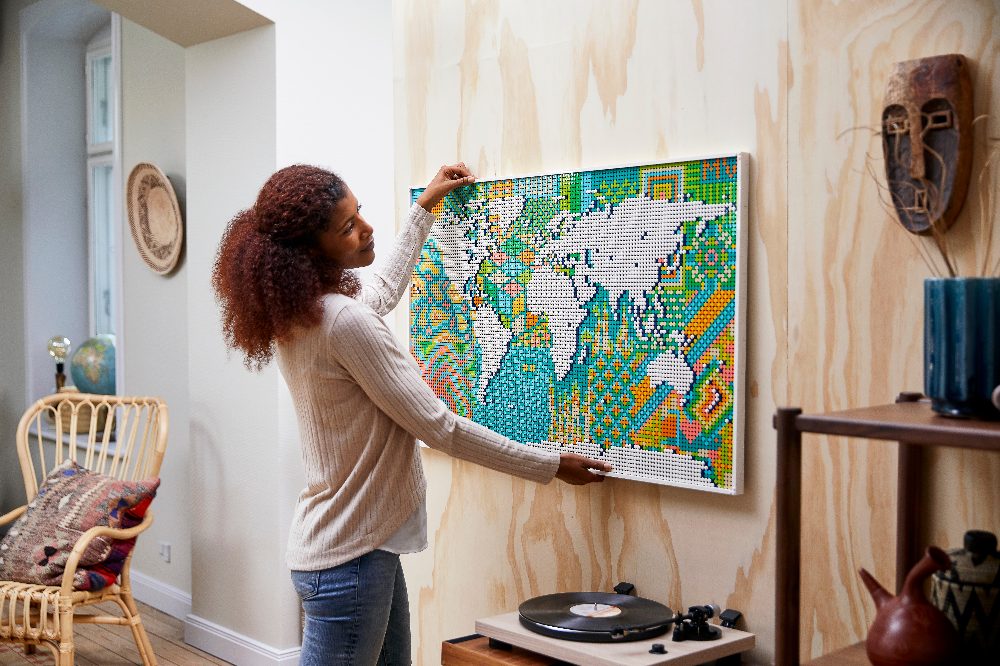
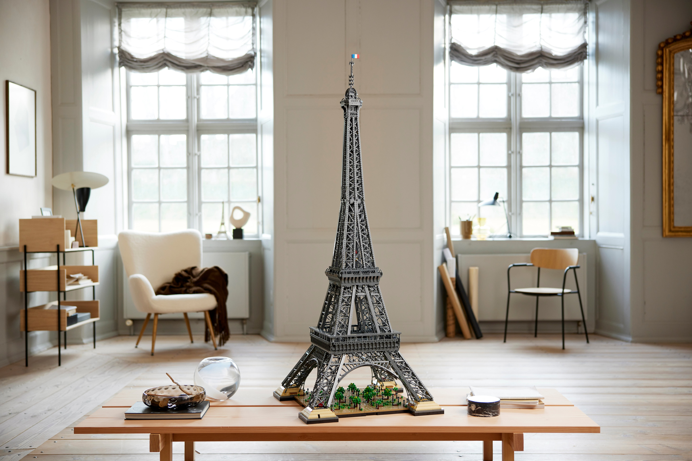
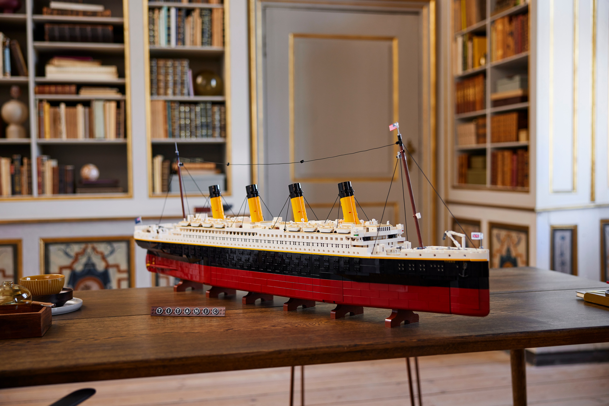
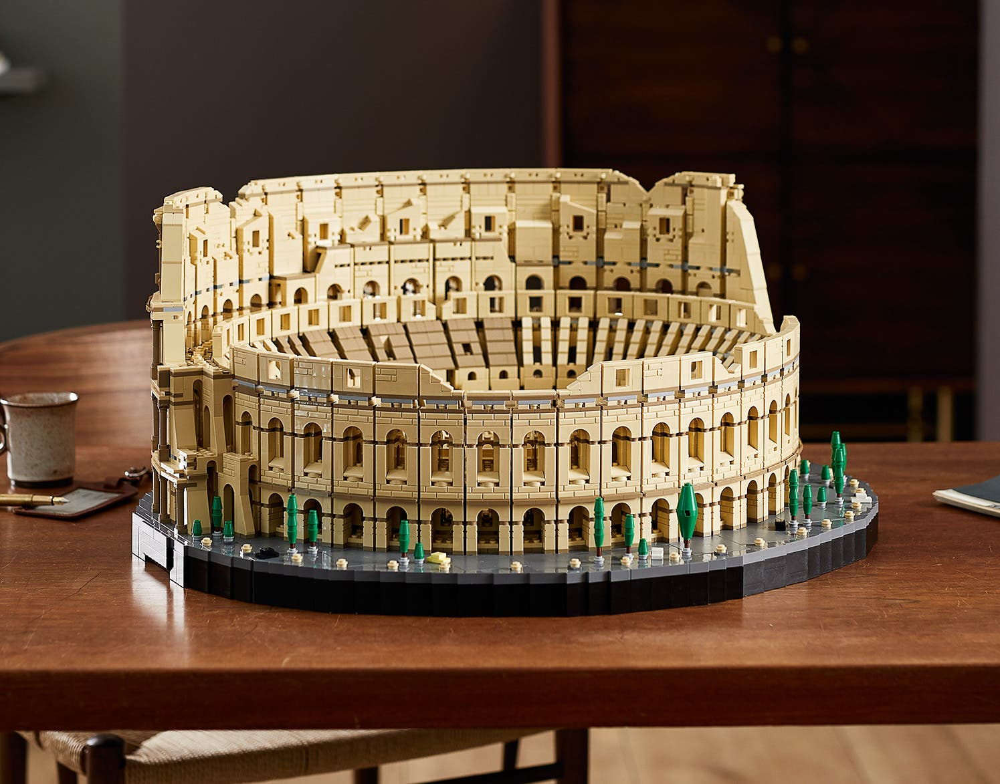
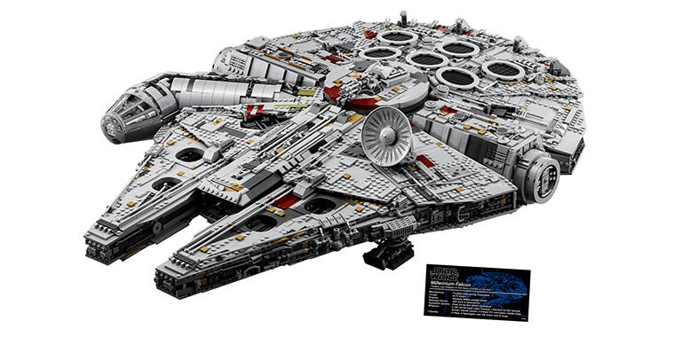

Топ найбільших наборів lego
Lego (ле́го, від дан. leg godt — «грай добре») — серії конструкторів, що являють собою набори деталей для збирання й моделювання різноманітних предметів. Набори Lego випускає група компаній The Lego Group, заснована 1932 року в Данії. Її назва виглядає і звучить як лат. і італ. lego — «збираю», хоча спочатку підприємство займалося випуском звичайних дерев'яних іграшок. Основним продуктом компанії Lego є різнобарвні пластмасові цеглинки, мініфігурки тощо. Асортимент деталей Lego дозволяє збирати споруди, транспортні засоби, а також рухомих роботів. Усе, що збудовано, можна потім розібрати на окремі деталі, використавши їх для створення інших об'єктів. Компанія Lego розпочала виробництво пластмасових цеглинок 1949 року. Відтоді Lego розширила сферу своєї діяльності, створивши фільми, ігри, конкурси, а також сім тематичних парків розваг і мініатюр, першим і найбільшим серед яких є Legoland на півострові Ютландія, у місті Біллунн. Дитячий конструктор (іграшка) для виховання, з втіленою ідеєю модульності, наочно демонструє дітям те, як можна вирішувати деякі технічні проблеми (зокрема, проблеми збирання, ремонту і розбирання техніки).
-
LEGO Art Карта світу
LEGO® Art Карта світу з 11 000 деталей — це не лише наш найбільший набір LEGO (за кількістю деталей), але й чудовий витвір настінного мистецтва. Ви можете накласти власний відбиток на світ, створювати візерунки в океанах і вибирати, який континент опиниться в центрі. Після створення ви можете відстежувати свої подорожі, позначати країни за допомогою маленьких кольорових шпильок або просто милуватися цією мапою як унікальним предметом домашнього декору. Немає жодної іншої карти світу, яка б була схожа на цю. Цей набір більше не доступний для придбання.
-
LEGO Ейфелева вежа
Хоча ми й раніше випускали моделі Ейфелевої вежі з кубиків LEGO, жодна з них не може зрівнятися з цією за розмірами та величчю. Цей набір 149 см заввишки є наразі нашим найвищим набором LEGO й досконалим відображенням найвідомішої пам'ятки Парижа. Нова Ейфелева вежа LEGO з реалістичною конструкцією та безліччю складних деталей має гарні ферми, ліфти, трансляційну вежу та французький прапор на самій вершині. Неймовірно! Якщо ви не власник Лувру або просторого гаража, бажаємо удачі в пошуку місця, куди її поставити... Хоча це, безумовно, найвищий набір, він містить 10 001 деталь, що не так багато, як у LEGO Art Карта світу...
-
LEGO Титанік
завдовжки 135 см наразі є нашим третім за розміром конструктором LEGO. Ця модель історичного корабля в масштабі 1:200 — найкращий будівельний проєкт із 9090 деталей. Це кайф! Набір, який містить багато автентичних деталей всередині й зовні, як і оригінальний корабель, має парадні сходи, котельню, різні каюти, рятувальні човни й навіть ресторан для пасажирів першого класу. Будь-якому любителю історії сподобається відтворювати такі деталі, як верхня палуба та басейн. Ви навіть можете спостерігати, як поршневі двигуни обертаються всередині під час обертання гвинтів. Головне питання... куди поставити цей експонат? Якщо вам потрібні поради, ось як можна показувати величезні набори LEGO вдома...
-
LEGO Колізей
Усього через два тисячоліття після побудови оригінального Колізею нарешті з’явився його аналог із кубиків LEGO. Ця неймовірна модель містить безліч захопливих деталей, гідних найбільш знакового амфітеатру в історії. Цей набір налічує9036 деталей і вражає своїми розмірами. Наш дизайнер Рок Згалін Кобе пояснив: «Що більше ми вдосконалювали модель для максимальної схожості з оригіналом, то більше деталей доводилося додавати». Хочете дізнатися більше? Ось як ми створили Колізей LEGO... Цей набір більше не доступний для придбання.
-
Конструктор UCS LEGO Star Wars™ Тисячолітній сокіл
Тепер, ми хотіли пожартувати про те, що раніше *великим* ми вважали конструктор з 7541 деталей. Проте до нас зайшов Чубакка і сказав, щоб ми цього не робили. Він так і сказав... чи попросив їсти — ми не розуміємо мову вукі. Чубакка — одна із семи мініфігурок у цьому вражаючому наборі 83 см завдовжки і 60 см завширшки. І (Ви не повірите), але він може виконувати складні маневри за 12 парсеків! Обов’язково перегляньте відео з нашої серії Відео для Дизайнерів, де два дизайнери конструктора докладно розповідають про його численні особливості.
Більше лего або придбати набір тут